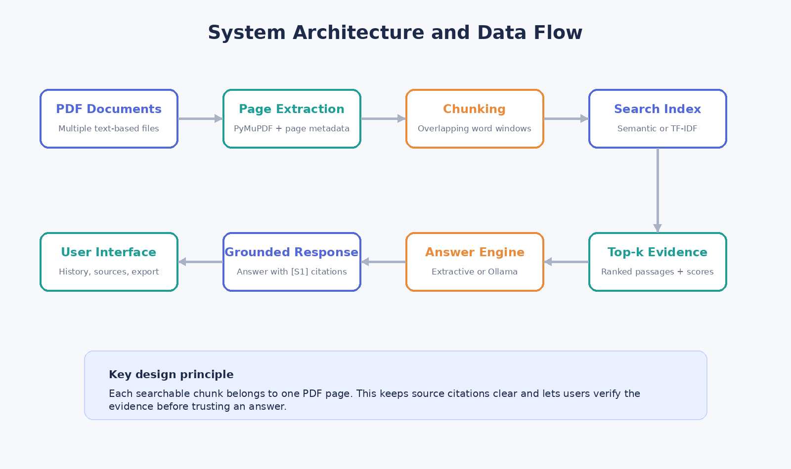
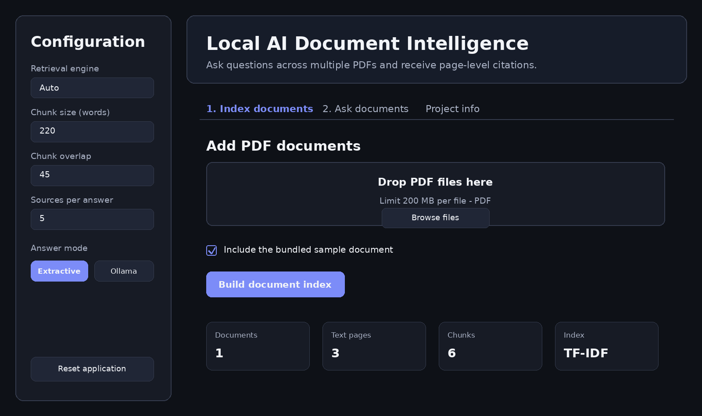

01 — OVERVIEW
From PDF collection to a verifiable answer.
The application reads one or more text-based PDFs, preserves file and page metadata, divides the content into overlapping chunks, retrieves the passages most relevant to a question, and produces an answer with source labels such as [S1]. Users can then open the evidence and verify the original file, page, relevance score, and excerpt.
02 — PROBLEM
Keyword search is fast, but it does not always understand meaning.
Important information is often distributed across reports, modules, technical documents, and articles. Manual reading takes time, while exact keyword search can miss relevant passages that use different terminology. This project combines semantic retrieval for meaning-based search with TF-IDF as a lightweight and dependable fallback.
Answers remain connected to filenames, page numbers, scores, and evidence excerpts.
The system remains useful without embeddings or a local language model.
Document processing and optional generation happen on the user’s computer.
The project includes architecture, testing, Windows packaging, and full documentation.
03 — ARCHITECTURE
A modular pipeline with a deliberate fallback path.

The Streamlit interface orchestrates modules inside the src package. The PDF processor handles extraction and chunking; the retriever builds either semantic embeddings or a TF-IDF index; the answer engine selects extractive sentences or sends grounded context to Ollama; and the exporter converts the session into Markdown.
04 — FEATURES
Document indexing and grounded question answering.

Upload several PDFs, extract selectable text per page, and build one searchable session.
Try multilingual Sentence Transformers first and fall back to TF-IDF when needed.
Adjust chunk size, overlap, and the number of evidence sources sent to the answer engine.
Use automatic setup plus dedicated Light and Dark launch scripts.
Return high-scoring sentences without requiring an LLM.
Generate a local response from retrieved evidence using a configured model.
Inspect S1, S2, and other sources with their original page and relevance score.
Save questions, answers, modes, and evidence as a portable project record.
05 — IMPLEMENTATION
Technology chosen for local operation and maintainability.
| Component | Responsibility |
|---|---|
| Python + Streamlit | Application orchestration, interface, and session state. |
| PyMuPDF | Page-aware PDF extraction and metadata preservation. |
| Sentence Transformers | Multilingual semantic embeddings and cosine similarity. |
| Scikit-learn | TF-IDF retrieval with unigram and bigram features. |
| Ollama + Requests | Optional private generation through a local HTTP API. |
| Unittest | End-to-end validation from generated PDF to cited answer. |
The Ollama client separates connection timeout from response timeout. This matters on CPU-based laptops where a local model may connect immediately but need several minutes to complete generation.
06 — VALIDATION
Testing the critical path instead of only the interface.
The automated test suite creates a PDF in memory and validates extraction, chunking, TF-IDF retrieval, answer generation, and the presence of an [S1] citation. Manual scenarios cover scanned PDFs, semantic fallback, Ollama being offline, read timeouts, Markdown export, and both visual themes.
07 — LIMITATIONS & ROADMAP
Useful today, with a clear route toward production.
- No OCR yet for image-only PDFs.
- The search index is stored in memory and rebuilt after restart.
- Chunking is page- and word-based rather than structure-aware.
- No cross-encoder reranker or highlighted PDF viewer yet.
- Ollama responses are currently non-streaming.
Next priorities are OCR, persistent vector storage, reranking, highlighted evidence, streaming generation, metadata filters, an evaluation dashboard, authentication, and Docker packaging.